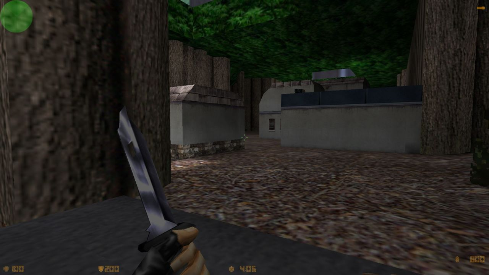

ua86:
as_forest for Counter-Strike by John Attea
Counter-Strike Beta 6.5, released 16 years ago - June 8, 2000
Today on “aspects of cs that I thought I’d imagined in a fever dream because literally nobody ever talks about them”
I have to admit I never even played this map. It’s gloriously 2000 and classic Goldsource.